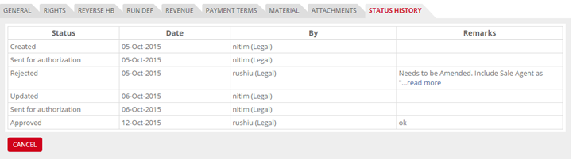
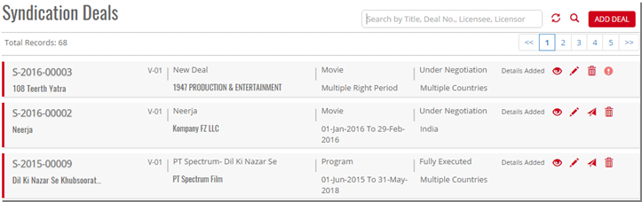
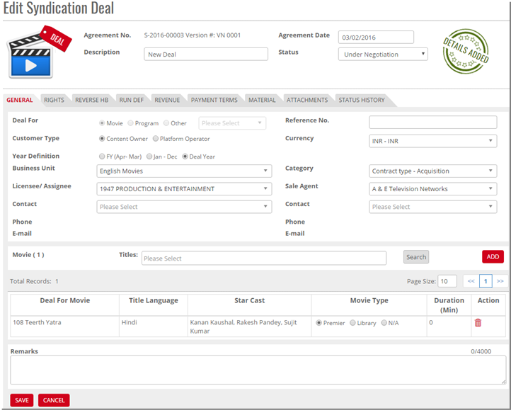


	<section>
		<article>
			<h2>Status History<span></span></h2>
			<div>
				<p></p>
				<p>This tab maintains history of modification to deal.</p>

				<div class="triangle-border top">				
					
				</div>

				<p>It has 4 columns.</p>

				<p><b>Status</b> - It shows total status of deal.</p>

				<p><b>Date</b> - Displays the date when the status was changed on.</p>

				<p><b>By</b> - The action/status performed by which user.</p>

				<p><b>Remarks</b> - Shows remarks for deal creation, deal approve or deal reject.</p>


				<p>Below are different status mentioned on the page:</p>

				<p><b>Created</b> - Denotes the details of deal creation.</p>

				<p><b>Updated</b> - When a deal is approved, any change made into it will be having updated status.</p>

				<p><b>Sent for Authorization</b> - Denotes that the deal is sent for approval.</p>

				<p><b>Approved</b> - Denotes a deal is approved by the approver.</p>

				<p><b>Rejected</b> - Denotes that a deal is rejected by approver.</p>

				<p><b>Modify Syndication Deal</b></p>


				<p>By default Entity wise Records are displayed in the main page of Syndication Deal list. Select the Pencil Icon for deal which you want to edit.</p>

				<div class="triangle-border top">				
					
				</div>

				<p>Click <b>Edit</b>, selected row will editable and modify the Syndication Deal in end of the page Save Deal and Cancel button will be shown.</p>

				<div class="triangle-border top">				
					
				</div>

				<p>Modify the existing data as per the requirements. And refer Add Page for validations against the field.</p>


				<p>User can Modify or Change the Deal Movie. In case Reference does not exist in other tabs like Rights, Revenue etc.</p>
				
			</div>
		</article>
	</section>